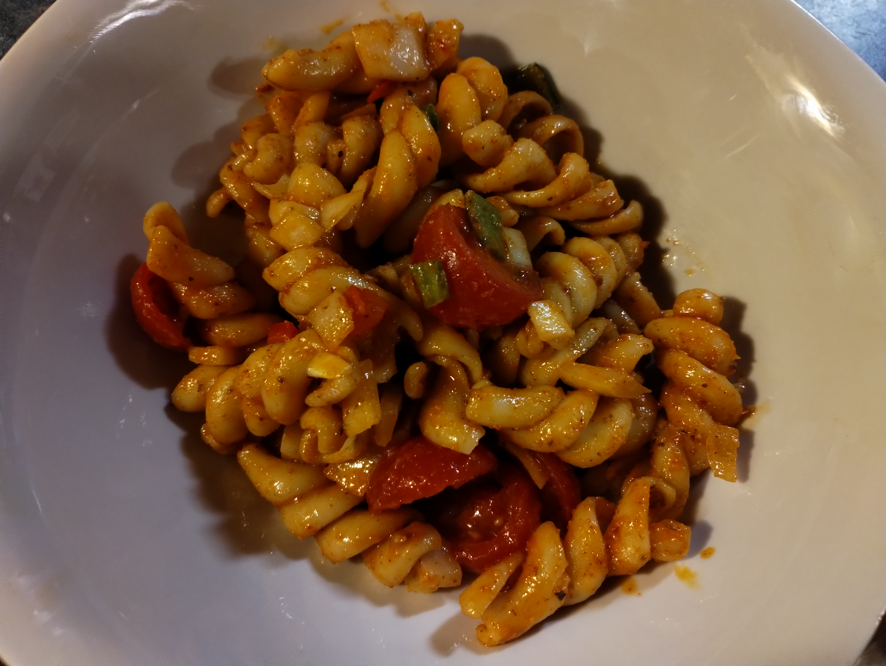

Home
Chipotle Pasta Salad

A deliciously spicy, smokey dish that is sure to be a crowd pleaser
This dish takes the basic elements of a pasta salad and adds a southwest flair. It uses agave nectar and roasted red bell pepper to give a hint of sweetness, balancing the smoky heat of the chipotles in adobo.
The acidity of the vinegar and tomatoes brings some brightness, while the onion and garlic give a litle pungency. A roasted poblano adds some color and a slight vegetal flavor.
The salad is rounded out with the sweet, aromatic earthiness of paprika and chili powder.
Ingredients
- 1lb Fusili pasta (Rao's is a great choice)
- 2-3 chipotles in adobo (with 1-2 tbsp sauce)
- 3 cloves garlic
- 1/3 cup red wine vinegar
- 2/3 cup extra virgin olive oil
- 2-3 tsp agave nectar
- 1 tsp smoked paprika
- 1 tsp chili powder
- 1 tsp fresh ground black pepper
- 1 poblano, roasted and chopped
- 1 red pepper, roasted and chopped
- 1/2 onion (any kind), diced
- 1 pint cherry tomatoes, halved
Steps
- Boil pasta in salted water
- Put chipotles, adobo, garlic, vinegar, oil, agave, paprika, chili powder, and pepper in a blender and blend until smooth
- Drain pasta and combine with sauc and remaining ingredients, stirring to coat eveything evenly